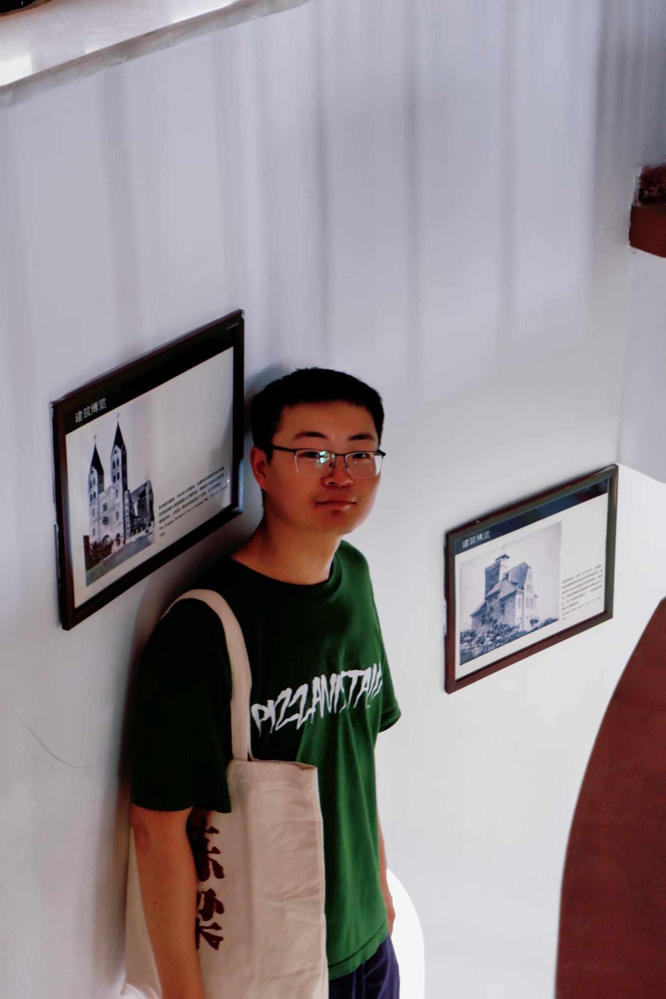

Noah Loake🎓 Second Year Phd StudentDepartment of Applied Economics Guanghua School of Management, Peking University. Email: benchengwang@stu.pku.edu.cn Office: Peking University Science Park, 305-153, No.5 Yiheyuan Road, Haidian District. Notice: I collect and organize information about economics seminars at Peking University and Tsinghua University each semester. If you're interested, you can refer to this shared spreadsheet: [Tencent Doc Link] Econ Seminar. |
 |
I am a second-year PhD candidate in the Department of Applied Economics at the Guanghua School of Management, Peking University. I am fortunate to be advised by Prof. Xiaobo Zhang and Prof. Li-An Zhou. Previously, I received my M.A. in Economics from Renmin University of China and a B.A. with a minor in Economics from Wuhan University.
My research interests include Development Economics, Political Economics, and Firm Behavior. Specifically, my work focuses on topics such as local government debt and payment arrears, rural-urban migration, as well as grassroots governance and social stability. I utilize large-scale firm-level and government-related datasets to explore government-business interactions within the context of China.
Feel free to contact me by email if you are interested in discussing or collaborating with me.
PhD Candidate in Applied Economics
Dissertation Committee: Prof. Xiaobo Zhang, Prof. Li-An Zhou
M.A. in Economics
B.A. with a Minor in Economics
| 2025 Fall, 2024 Fall | Economics 101 | (PKU, 02831110) |